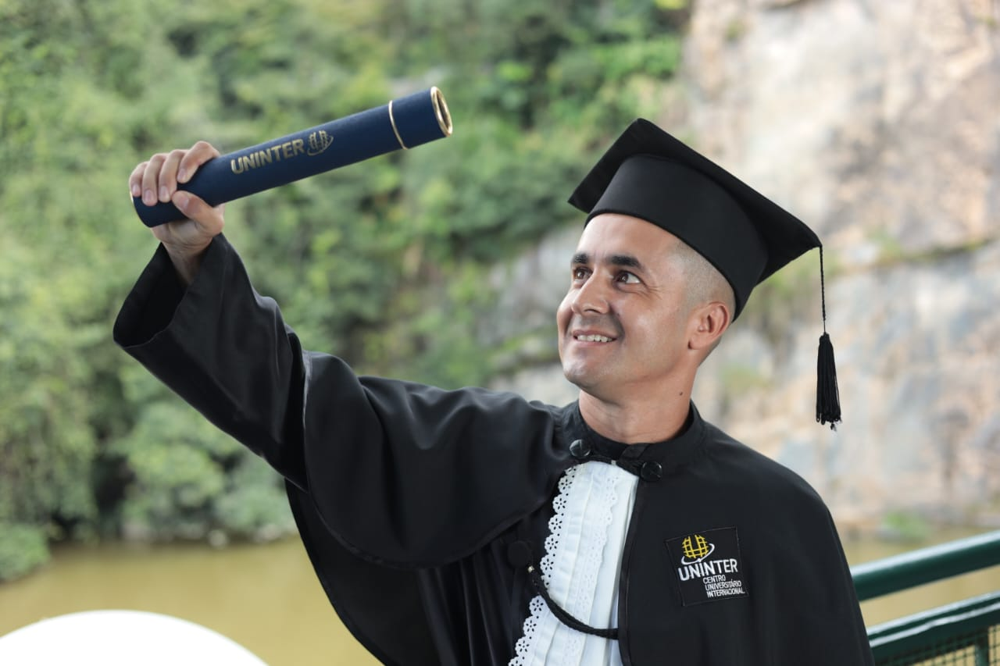
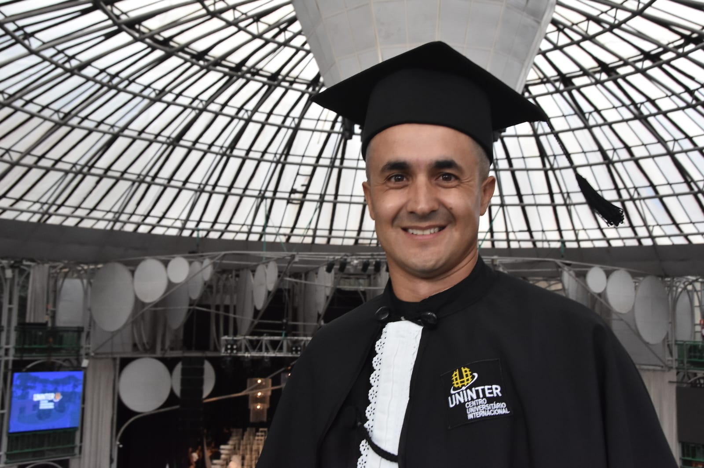
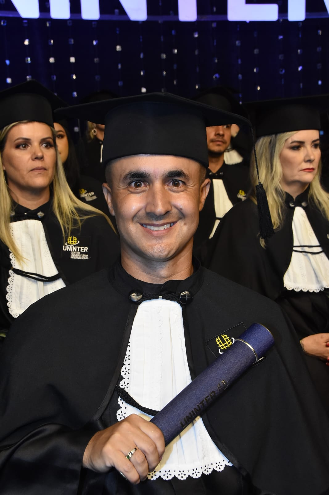
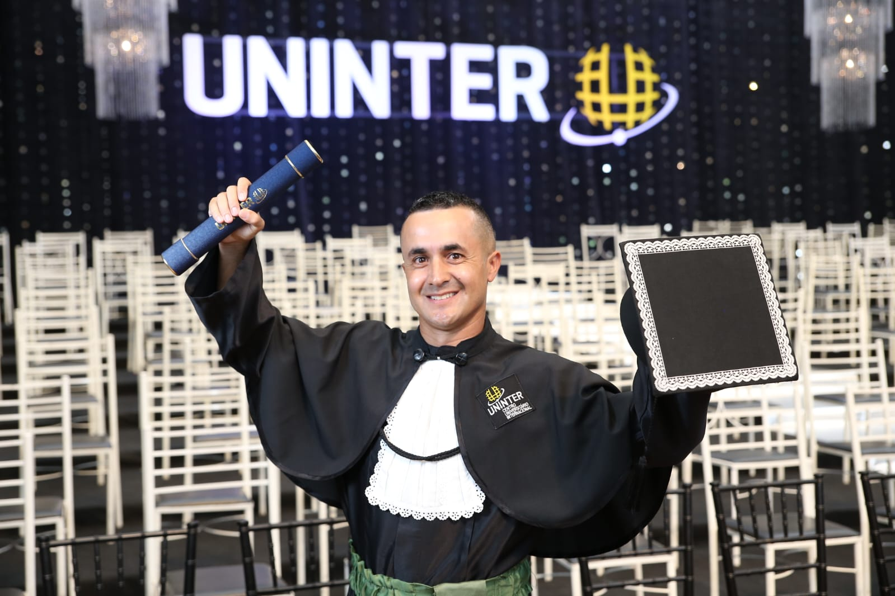
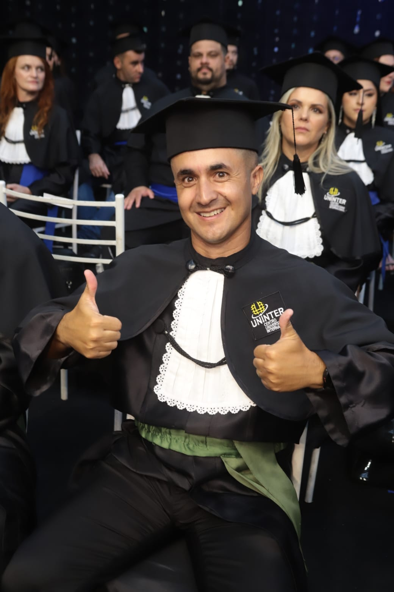
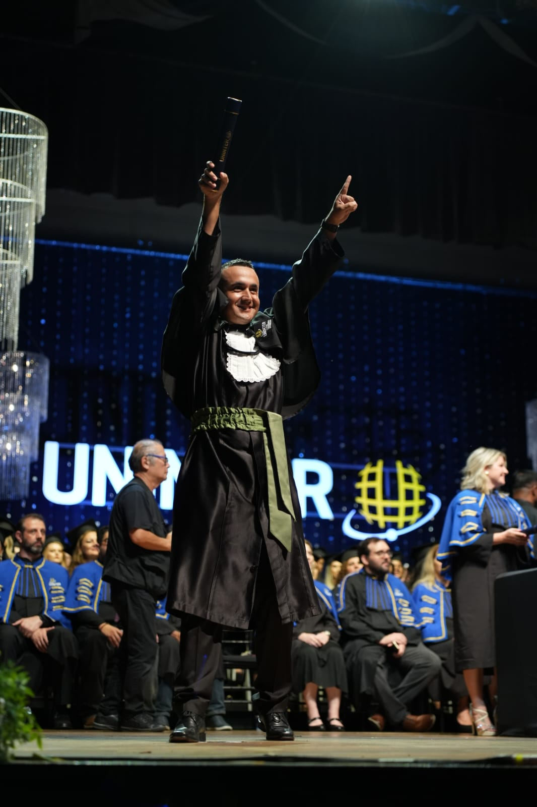
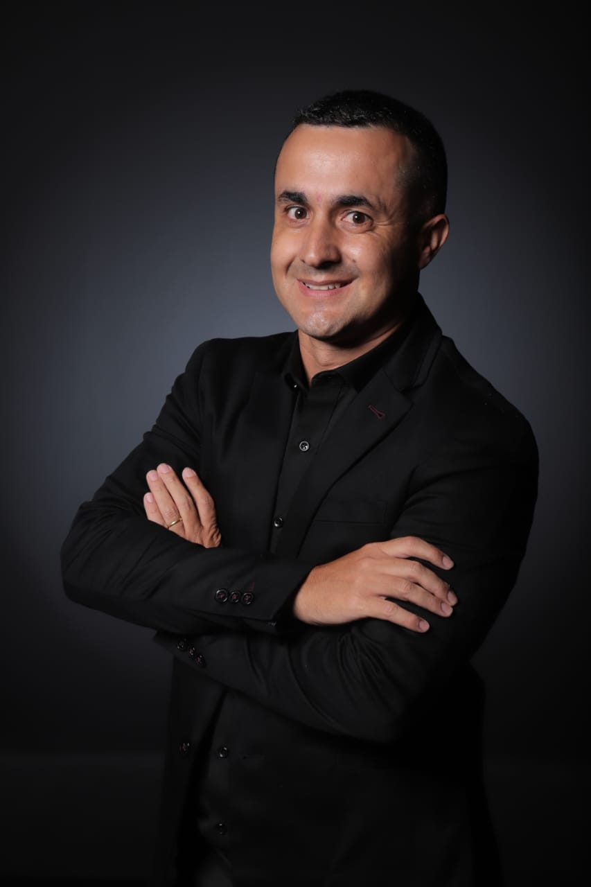

Minha jornada na Fisoterapia
Escolher a Fisioterapia foi um grande marco na minha trajetória. Minha caminhada na saúde começou como Técnico em Radiologia, mas, em 2020, senti
o chamado para ir além do diagnóstico por imagem e me aprofundar no cuidado direto ao paciente. Foi assim que decidi ingressar na graduação da Uninter,
onde encontrei a estrutura ideal para consolidar essa nova profissão.
Essa escolha também tem muito a ver com a minha história pessoal. Desde a juventude, sempre fui completamente apaixonado por esportes e passava muito
tempo jogando futebol — uma paixão que cultivo até hoje. Vivenciar o esporte me deu, desde cedo, uma compreensão natural sobre o movimento, a superação
física e a importância de uma boa recuperação.
Ao me formar, escolhi direcionar o meu trabalho para o atendimento domiciliar (home care). Atender o paciente em sua própria casa me permite oferecer um
tratamento de excelência com total exclusividade, sem a impessoalidade de uma clínica. No ambiente domiciliar, eu consigo avaliar a realidade real do paciente,
adaptar os exercícios ao seu cotidiano e proporcionar o máximo de conforto e segurança, principalmente para quem está lidando com dores ou limitações de mobilidade.
Unir a precisão da minha bagagem em imagem, a paixão pelo dinamismo do esporte e o acolhimento do atendimento em casa é o que me permite entregar uma reabilitação
assertiva, humana e focada na autonomia de cada paciente.







